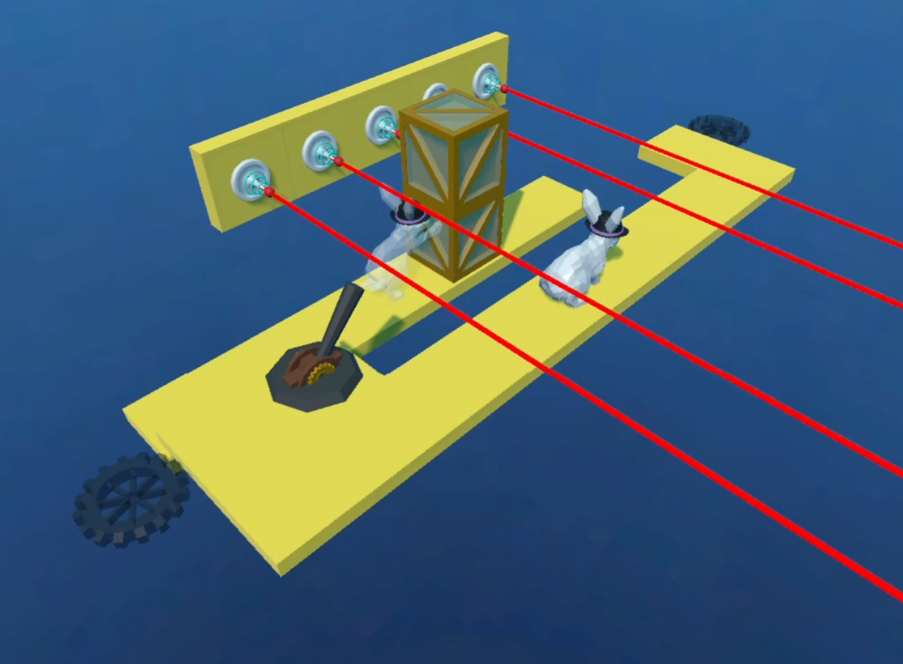
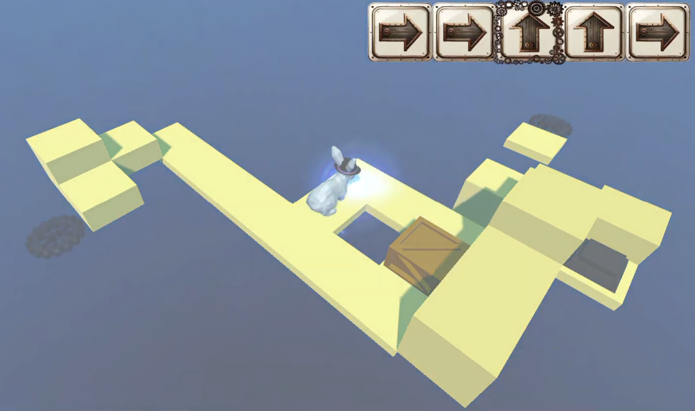
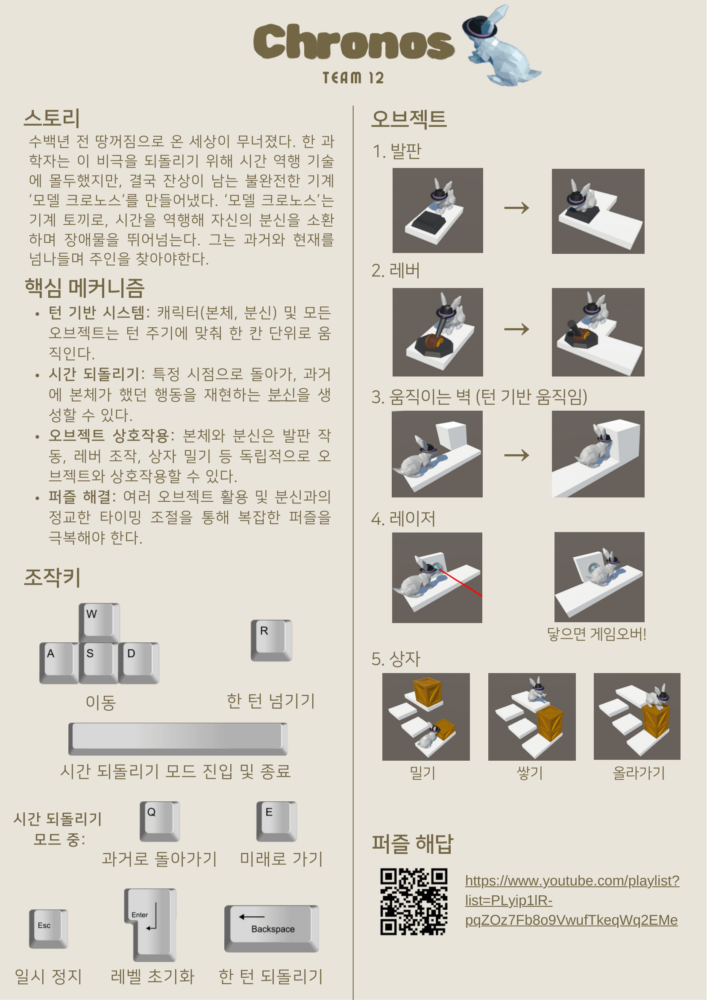

概要
Chronos は、時間逆行とクローン再生を中心ギミックとするターン制3Dパズルゲームです。プレイヤーが過去の特定ターンへ戻ると、以前の行動がクローンとして再生され、現在のプレイヤーの行動と一緒にパズルオブジェクトへ影響する構造です。
プレイヤー入力をターン単位で処理する全体ターンループと、時間逆行・クローン再生・オブジェクト状態復元に必要な状態ログシステムを設計・実装しました。プレイヤー、クローン、箱、ボタン、レバー、移動障害物が同じターンの流れで動くように、ゲームプレイシステムを整理しました。
最終発表後、5人チーム内の匿名相互評価で22%の貢献度評価を受け、授業全体では上位20%の成績を達成しました。
担当内容
- 1回のプレイヤー入力が、プレイヤー移動、クローン再生、オブジェクト反応へつながるターン制進行構造を実装しました。
- TurnManagerを中心に、各オブジェクトの移動と状態変更が終わってから次のターンへ進むように制御しました。
- プレイヤー入力とオブジェクトごとの位置・状態ログをターンごとに保存し、時間逆行とクローン再生のタイミングに合わせて復元できるようにしました。
- 箱、ボタン、レバー、レーザー、移動障害物など、パズルオブジェクトの相互作用と衝突処理を実装しました。
- レベルごとにシーンを分け、additive load方式でつないで、ステージ遷移とカメラ移動が自然につながるようにしました。
設計上の課題
このプロジェクトで一番難しかったのは、ターン制ゲームプレイとチーム単位の実装を同時に合わせることでした。プレイヤー入力1回が、移動、クローン再生、箱の移動、レバー状態変化、落下判定、時間逆行ログ更新まで続く構造だったため、処理順序や状態反映順序が少しずれるだけでバグが出やすい状態でした。
序盤はプレイヤー移動、オブジェクト、マップなどを分けて実装しましたが、統合の段階で機能ごとの入出力方式や状態変更の基準が少しずつ違い、問題が起きました。似た役割の関数が重複したり、ある機能が想定した状態と別の機能が実際に渡す状態が違ったりして、全体の動きが不安定になることがありました。
これを解決するために、まず各機能の役割、入出力基準、ターン進行順序を整理しました。そのうえでTurnManagerを中心に、プレイヤー、クローン、オブジェクトの動作が同じターンフローの中で処理されるように構造を整え、プレイヤー入力と位置・状態ログを使って、時間逆行とクローン再生が一貫して動くように実装しました。
ゲームプレイ画面


ターン制パズル環境とクローンを使った巻き戻しギミックが実際に動作している画面です。
ゲームマニュアル（韓国語）
